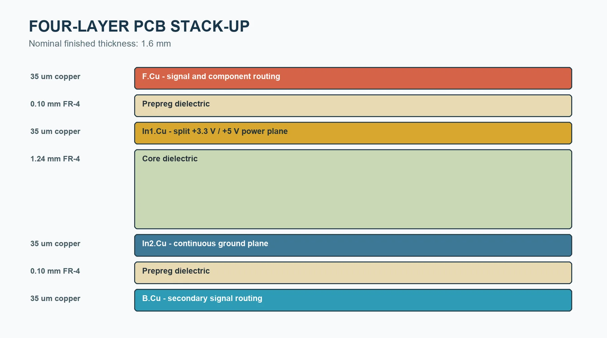
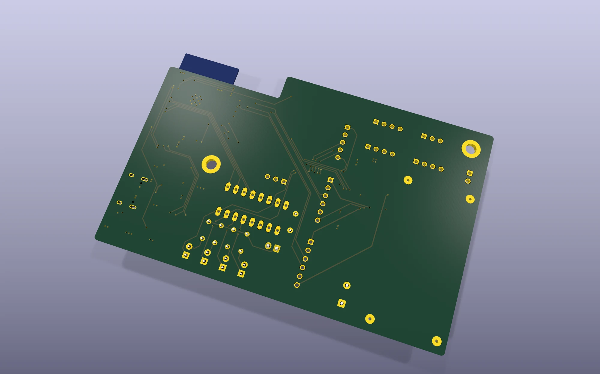

Layered chassis
Two structural plates create defined zones for electronics, power, motion hardware and cable routing.
Robotics / Final year project
A complete mechatronic design combining a custom SolidWorks chassis, an enclosed robot body, sensor and drive integration, manufacturing drawings and purpose-built control PCBs.

I designed the robot as a layered assembly so the sensing, electronics, battery and drive system could fit within a compact mobile platform and remain accessible during development.
The top and bottom chassis plates locate the PCB, battery, stepper-driven ToF scanner, motors, encoder wheels and caster supports. A separate housing completes the enclosed form while leaving the front sensor unobstructed.
Two structural plates create defined zones for electronics, power, motion hardware and cable routing.
The VL53L8CX sensor housing mounts to a stepper mechanism at the front of the robot.
N20 geared motors, encoder wheels and caster supports were positioned around the chassis geometry.
The external shell encloses the system while preserving display, sensor and wheel clearances.
SolidWorks assembly
The open assembly view shows how the PCB, scanner, motors, chassis plates and structural spacers were coordinated in the CAD model.


Engineering drawings
I translated the SolidWorks models into dimensioned drawings and exploded assembly documentation. Each preview links to the full drawing PDF.


The mechanical design was refined alongside the electronics instead of being treated as a separate enclosure exercise.
PCB progression
The first board established the robot's core interfaces. The later design expanded that work into a more integrated ESP32-based architecture with a four-layer stack-up and improved functional organization.
This earlier board brought the ESP32 module, motor control, power conversion and sensor connectors onto one practical platform. It provided the foundation for mechanical integration and system testing.

The advanced board reorganized the power, sensing, motor and communication sections around the final system requirements. The multilayer design improved routing freedom, grounding and power distribution while keeping the board within the robot's mechanical envelope.

Advanced PCB details

